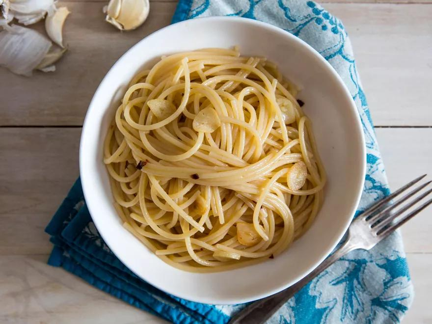

Aglio e Olio

If there were a pasta bible, the first line would read, "In the beginning, God created aglio e olio." Historically, that line wouldn't really be accurate, since the evidence doesn't support the idea that garlic (aglio) and oil (olio) were the original accompaniments to pasta. But structurally—and by that I mean the way most pasta sauces today are cooked—aglio and olio are almost always the first step. From arrabbiata to marinara, alle vongole to puttanesca, each sauce begins by gently cooking garlic in oil. Even pesto, which is never cooked, has at its base a purée of garlic suspended in oil.
Ingredients
- Kosher salt
- 1 pound (450g) dried spaghetti
- 1/2 cup (120ml) extra-virgin olive oil, divided
- 4 medium cloves garlic, thinly sliced
- Red pepper flakes, to taste (optional)
- Minced flat-leaf parsley, for serving (optional)
Directions
- In a pot of salted boiling water, cook spaghetti until just shy of al dente (about 1 minute less than the package directs). Reserve pasta cooking water.
- Meanwhile, in a large skillet, combine 6 tablespoons oil and garlic. Add pinch of red pepper flakes, if using. Cook over medium heat until garlic is very lightly golden, about 5 minutes. (Adjust heat as necessary to keep it gently sizzling.)
- Transfer pasta to skillet along with 1/2 cup pasta water, increase heat to high, and cook, stirring and tossing rapidly, until a creamy, emulsified sauce forms and coats the noodles. Remove from heat, add remaining 2 tablespoons olive oil, and stir well to combine. Mix in parsley, if using, and serve right away.
Recipe by Serious Eats